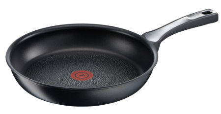

자 이제 여기서는 요리 방법에 대해 소개할게.
일단 계란볶음밥은 누구나 할 수 있는 간단한 레시피야. 그리고 배고플때 먹으면 생각보다 맛있지
자 그럼 바로 레시피를 보러 갈까?
우선 처음에는 프라이팬에 기름을 둘러.
기름은 적당히 두르면 OK
그 다음 어서 계란을 1~2개를 깨서 프라이팬에 넣어
그 다음 계란을 반숙으로 요리할지 완숙으로 요리할지를 정해볼거야.
자 여기서 선택지가 갈려 반숙으로 요리하고싶으면 반숙버튼을 완숙으로 하고싶으면 완숙버튼을 눌러줘
자 이제 모두 계란후라이는 할 수 있지? 이제 정말 얼마 안남았어!
이제 밥먹을 그릇에 밥을 먹을만큼 담아줘
이제 아까 요리한 계란후라이를 밥 위에 올려줘
이제 마지막으로 양조간장과 참기름을 둘러주면 끝!
반숙은 노른자를 터트려 먹으면 맛있고 완숙은 노른자를 먹는맛이 맛있지 그럼 여기까지! 이제 홈이나 끝맺음으로 가자!